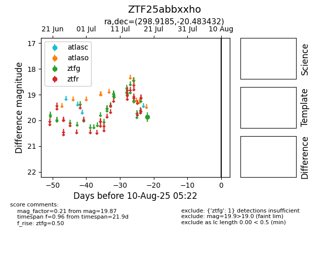

Target ZTF25abbxxho at 2025-08-10 05:22, see:
FINK: fink-portal.org/ZTF25abbxxho
Lasair: lasair-ztf.lsst.ac.uk/objects/ZTF25abbxxho
ALeRCE: alerce.online/object/ZTF25abbxxho
alt names
ZTF25abbxxho (ztf,fink)
coordinates:
equatorial (ra, dec) = (298.9185,-20.48343)
galactic (l, b) = (20.8145,-22.96661)
photometry
last ztfg=19.87
1 ztfg detections
